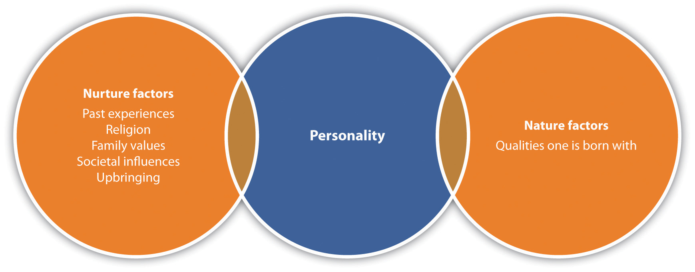

Our personalityA set of traits that can explain or predict a person’s behavior in variety of situations. is defined as a set of traits that can explain or predict a person’s behavior in a variety of situations. In other words, personality is a set of characteristics that reflect the way we think and act in a given situation. Because of this, our personality has a lot to do with how we relate to one another at work. How we think, what we feel, and our normal behavior characterize what our colleagues come to expect of us both in behavior and the expectation of their interactions with us. For example, let’s suppose at work you are known for being on time but suddenly start showing up late daily. This directly conflicts with your personality—that is, the fact that you are conscientious. As a result, coworkers might start to believe something is wrong. On the other hand, if you did not have this characteristic, it might not be as surprising or noteworthy. Likewise, if your normally even-tempered supervisor yells at you for something minor, you may believe there is something more to his or her anger since this isn’t a normal personality trait and also may have a more difficult time handling the situation since you didn’t expect it. When we come to expect someone to act a certain way, we learn to interact with them based on their personality. This goes both ways, and people learn to interact with us based on our personality. When we behave different than our normal personality traits, people may take time to adjust to the situation.
Personality also affects our ability to interact with others, which can impact our career success. In a 2009 studyAngelina R. Sutin and Paul T. Costa, “Personality and Career Success,” European Journal of Personality 23, no. 2 (March 2009): 71–84. by Angelina Sutin et al., it was found that the personality characteristic of neuroticism (a tendency to experience negative emotional states) had more effect than any personality characteristic on determining future career success. In other words, those with positive and hopeful personalities tend to be rewarded through career success later in life.
Although there is debate between whether or not our personalities are inherent when we are born (nature) versus the way we grew up (nurture), most researchers agree that personality is usually a result of both nature and our environmental/education experiences. For example, you have probably heard someone say, “She acts just like her mother.” She likely behaves that way because she was born with some of her mother’s traits, as well as because she learned some of the behaviors her mother passed to her while growing up.
Figure 1.1
Nature and nurture factors determine our personality.
Another example might be someone who grows up with their parents constantly having parties. As a result, as an adult this person may end up organizing a lot of parties, too. Or the influence of parties may create the opposite effect, where the person doesn’t want to have parties at all. The environmental and educational experiences can create positive or negative associations, which result in how we feel about any situation that occurs in our lives.Alexandria Lupu, “Our Personality: Is It Genetically Inherited or Determined by the Environmental Factors,” Softpedia News, July 2, 2006, accessed February 3, 2012, http://news.softpedia.com/news/Our-Personality-Is-It-Genetically-Inherited-or-Determined-by-The-Environmental- Factors-28413.shtml
Our values help determine our personality. Our valuesThe things we find most important to us. are those things we find most important to us. For example, if your value is calmness and peace, your personality would show this in many possible ways. You might prefer to have a few close friends and avoid going to a nightclub on Saturday nights. You might choose a less stressful career path, and you might find it challenging to work in a place where frequent conflict occurs.
We often find ourselves in situations where our values do not coincide with someone we are working with. For example, if Alison’s main value is connection, this may come out in a warm communication style with coworkers and an interest in their personal lives. Imagine Alison works with Tyler, whose core value is efficiency. Because of Tyler’s focus, he may find it a waste of time to make small talk with colleagues. When Alison approaches Tyler and asks about his weekend, she may feel offended or upset when he brushes her off to ask about the project they are working on together. She feels like a connection wasn’t made, and he feels like she isn’t efficient. Understanding our own values as well as the values of others can greatly help us become better communicators.
What are your top five values? How do you think this affects your personality?
| Accomplishment, success | Ease of use | Meaning | Results-oriented |
| Accountability | Efficiency | Justice | Rule of law |
| Accuracy | Enjoyment | Kindness | Safety |
| Adventure | Equality | Knowledge | Satisfying others |
| All for one & one for all | Excellence | Leadership | Security |
| Beauty | Fairness | Love, romance | Self-givingness |
| Calm, quietude, peace | Faith | Loyalty | Self-reliance |
| Challenge | Faithfulness | Maximum utilization | Self-thinking |
| Change | Family | Intensity (of time, resources) | Sensitivity |
| Charity | Family feeling | Merit | Service (to others, society) |
| Cleanliness, orderliness | Flair | Money | Simplicity |
| Collaboration | Freedom, liberty | Oneness | Skill |
| Commitment | Friendship | Openness | Solving problems |
| Communication | Fun | Other’s point of view, inputs | Speed |
| Community | Generosity | Patriotism | Spirit, spirituality in life |
| Competence | Gentleness | Peace, nonviolence | Stability |
| Competition | Global view | Perfection | Standardization |
| Concern for others | Goodwill | Personal growth | Status |
| Connection | Goodness | Perseverance | Strength |
| Content over form | Gratitude | Pleasure | A will to perform |
| Continuous improvement | Hard work | Power | Success, achievement |
| Cooperation | Happiness | Practicality | Systemization |
| Coordination | Harmony | Preservation | Teamwork |
| Creativity | Health | Privacy | Timeliness |
| Customer satisfaction | Honor | Progress | Tolerance |
| Decisiveness | Human-centered | Prosperity, wealth | Tradition |
| Determination | Improvement | Punctuality | Tranquility |
| Delight of being, joy | Independence | Quality of work | Trust |
| Democracy | Individuality | Regularity | Truth |
| Discipline | Inner peace, calm, quietude | Reliability | Unity |
| Discovery | Innovation | Resourcefulness | Variety |
| Diversity | Integrity | Respect for others | Well-being |
| Dynamism | Intelligence | Responsiveness | Wisdom |
Our attitudesFavorable or unfavorable feelings toward people, things, or situations. are favorable or unfavorable opinions toward people, things, or situations. Many things affect our attitudes, including the environment we were brought up in and our individual experiences. Our personalities and values play a large role in our attitudes as well. For example, many people may have attitudes toward politics that are similar to their parents, but their attitudes may change as they gain more experiences. If someone has a bad experience around the ocean, they may develop a negative attitude around beach activities. However, assume that person has a memorable experience seeing sea lions at the beach, for example, then he or she may change their opinion about the ocean. Likewise, someone may have loved the ocean, but if they have a scary experience, such as nearly drowning, they may change their attitude.
The important thing to remember about attitudes is that they can change over time, but usually some sort of positive experience needs to occur for our attitudes to change dramatically for the better. We also have control of our attitude in our thoughts. If we constantly stream negative thoughts, it is likely we may become a negative person.
In a workplace environment, you can see where attitude is important. Someone’s personality may be cheerful and upbeat. These are the prized employees because they help bring positive perspective to the workplace. Likewise, someone with a negative attitude is usually someone that most people prefer not to work with. The problem with a negative attitude is that it has a devastating effect on everyone else. Have you ever felt really happy after a great day and when you got home, your roommate was in a terrible mood because of her bad day? In this situation, you can almost feel yourself deflating! This is why having a positive attitude is a key component to having good human relations at work and in our personal lives.
But how do we change a negative attitude? Because a negative attitude can come from many sources, there are also many sources that can help us improve our attitude.
On the Motivation123 website, they describe the three things to consider when trying to change your attitude.
Reams are written about improving your attitude; not so when it comes to defining that thing you’re trying to improve. In this checklist, we’re going to fix that.
Though there are many ways to define attitude, I find the three checkpoints below to be the most helpful. They make it clear not only what your attitude is made of but also how it affects what you do.
1. How You Enter
Before heading down South for a vacation, I expected a relaxing and enjoyable time. This is the first piece of your attitude: it is what you expect before something happens.
For me, I expected good things. Someone with a more negative bent—at least in relation to traveling—would predict rough times ahead.
2. How You Live through It
The second piece of your attitude is the way in which you gauge progress. Do you notice what is going wrong? Going well? Somewhere in between?
I went to dinner the other night with a few friends. I’m always on the lookout for stories to use on the site, so when they started to comment on the place, I was drawn in. One friend noticed how noisy the restaurant was, how grumpy the waiter seemed, and how bad the food tasted.
On the heels of this cheery testimonial, the friend sitting next to me said she loved the atmosphere, the style of the tables, and her dinner. Two attitudes looking for very different things.
3. How You Exit
The last role your attitude plays happens at the end of a situation or experience. At this point, your attitude affects the way you sum things up.
I was watching a competition-based reality show the other night and, when two people were sent home, they were given the chance to talk to the camera one last time.
They were asked what they would take away from the experience. The first reflected on the friendships he had made and the good times he had had. The second was angry and vengeful. To her, the experience was a waste of time. Attitude strikes again.
Reprinted with permission: Motivation123.com. Get hundreds of simple motivation tips, along with your free Motivation123 Welcome Kit, at the Motivation123.com website. Visit http://www.motivation123.com today.
As Note 1.19 "Changing Your Attitude" points out, our attitude is ultimately about how we set our expectations; how we handle the situation when our expectations are not met; and finally, how we sum up an experience, person, or situation. When we focus on improving our attitude on a daily basis, we get used to thinking positively and our entire personality can change. It goes without saying that employers prefer to hire and promote someone with a positive attitude as opposed to a negative one. Other tips for improving attitude include the following:Richard Whitaker, “Improving Your Attitude,” Biznick, September 2, 2008, accessed February 3, 2012, http://biznik.com/articles/improving-your-attitude
People would describe me as unhappy.
I complain right away if there is something I don’t like.
Being positive most of the time is far too unrealistic.
If I have a bad morning, the rest of my day is sure to be ruined.
I tend to think more about my weak points than my strong points.
I don’t give out compliments because I don’t want someone to get a big ego.
In the past two weeks, I have called myself depressed.
I worry too much about things I can’t control.
It takes a lot to make me happy.
When I experience a failure, I usually just stop trying.
Now, count the number of true and false answers. The more false answers you have, the better attitude you tend to have. If you have many true answers, what are some ways to help you change to a more positive attitude?
When considering our personality, values, and attitudes, we can begin to get the bigger picture of who we are and how our experiences affect how we behave at work and in our personal lives. It is a good idea to reflect often on what aspects of our personality are working well and which we might like to change. With self-awareness (discussed further in Chapter 2 "Achieve Personal Success"), we can make changes that eventually result in better human relations.
Our personality traits, attitude, and self-esteem have everything to do with human relations. When you are planting a vegetable garden, you wouldn’t fill the new garden with old soil that no longer has nutrients in it. Doing this will result in your plants not growing as large as they can or could even result in them not growing at all. If we look at our human relations ability, the same idea applies. Personality, attitude, and self-esteem comprise the nutrient-rich soil required for our human relations skills to grow. Our personality is how we see the world, either positive and full of hope or negative and full of despair. Without a positive attitude, it can be difficult to relate to others—because they may not want to be around us! Likewise, having a positive self-image can give us the confidence to nurture relationships, resulting in positive human relations as well. Just like the garden that needs soils rich in nutrients, our human relations skills are the same. To make our human relations skills grow, we need to look at our underlying personality characteristics, attitudes, and self-esteem that could be helping—or hindering—our ability to relate to others.